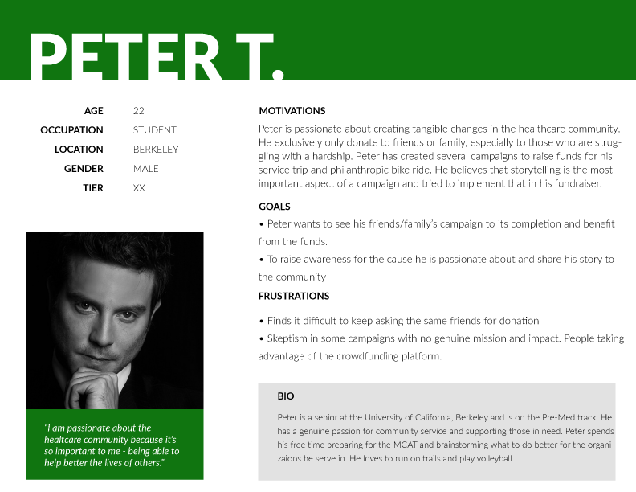
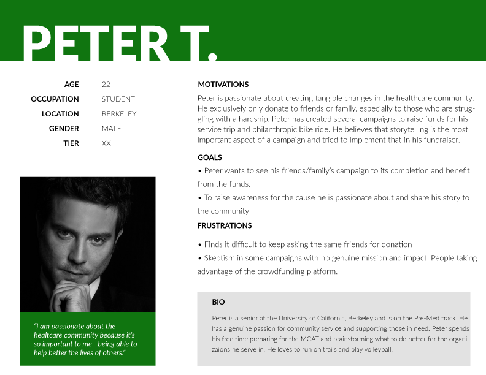

Exploring the requirements
RESEARCHING THE CHALLENGES
Survey Findings: At this initial stage, it was important to gain a better understanding of users' behavior of donating to a charity or spearheading a fundraiser. The survey was aimed towards a group of people who have made donations, created fundraiser projects, participated in charity bike ride and also users who have neither fundraised or donated. Click here to view the survey responses
- 50% of respondents felt that the progress bar and fundraising are the most important features.
- 61% of respondents say that they rarely donate.
- 38.9% of respondents say that emotional videos will most likely make them want to donate.
- Some respondents felt the process of creating an account and going through the donation flow are a hassle that takes a toll of their time.
- When creating a campaign, 67% of respondents say that sharing their campaign through social media or email is the most important.
In addition to the survey, it was also important to conduct user interviews on people who have been on charity bike rides and have experienced through the fundraising process. These are my findings:
- Fundraisers generally have to reach out to the organization that they’re supporting to host the fundraising site. This makes it hard to gain traction from the cyclist community to contribute fundings.
- One interesting observation was that people are more likely to donate or feel more comfortable fundraising if the project entice challenges rather than just "asking for money".
Data Insights: The data revealed the users' attitudes and motives towards donating. Based on the survey, there seems to be theme of users not knowing how much of an impact their donation will make or if they should trust the fundraiser. These results were important in deciding not only the features of Ridestarter, but also to design a transparent and trusting crowdfunding application. The goal here is to build trust through transparency so donors can appreciate the value of their donation and make an impact to the community.

Competitive Analysis: I analyzed four different crowdfunding companies in order to find out more about how they operate, their strengths/weaknesses, features, and differentiators. Based from the analysis, it was apparent that almost all crowdfunding sites strive for similiar features - progress meter and donation goals. Because Ridestarter is a crowdfunding source for charity bike rides, it was important that the application contains features unique to cycling as well as some of the important crowdfunding elements such as a progress bar and fundraising goal. You can take a closer look of the competitive analysis here.

Personas: After conducting user interviews and compiling the survey, I created three user personas to reflect both the fundraiser and donor perspective. My goal was to develop empathy for the users and how they will interact with the application.
 
